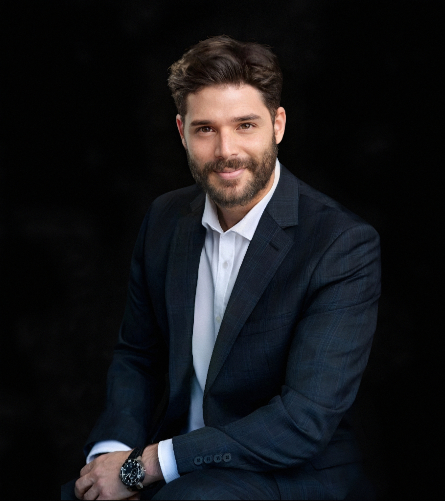

Descubra los profesionales asociados detrás del éxito de WorkSky Company.
Más información


Joseth Molina
Cofundador de WorkSy Company
Cofundador y Presidente de WorkSky, con una sólida formación en gestión de negocios y estrategia empresarial, ha forjado una visión transformadora que busca redefinir los estándares del reclutamiento profesional en la industria laboral alemana.
Como CEO de WorkSky, ha dirigido la expansión estratégica de la empresa, enfocándose en el reclutamiento ético e inclusivo de trabajadores internacionales en Alemania. Su experiencia en estrategia organizacional, liderazgo intercultural y desarrollo empresarial lo posiciona como un referente en la industria.Cree firmemente en la transformación social a través del empleo digno y en el poder de la colaboración internacional para construir un futuro mejor.